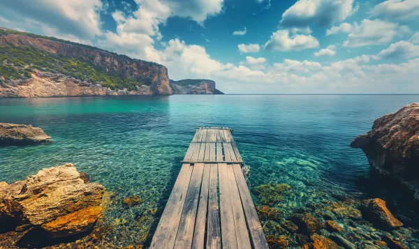

| Images | Videos | Audio |  a tree in fall a tree in fall |
Video downloaded on Coverr a dog laying down on the floor | audio |
|---|---|---|
 a posterized owl a posterized owl |
Video downloaded on Coverr a cup of coffee being poured into a cup | audio |
 a cat looking over land a cat looking over land |
scientists working with chemicals | audio |
| a wooden pier | blue cells floating in some sort of fluid | audio |
 water demonstrating physics of action and reaction water demonstrating physics of action and reaction |